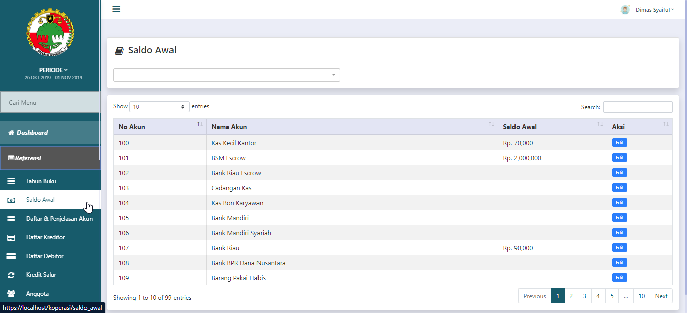
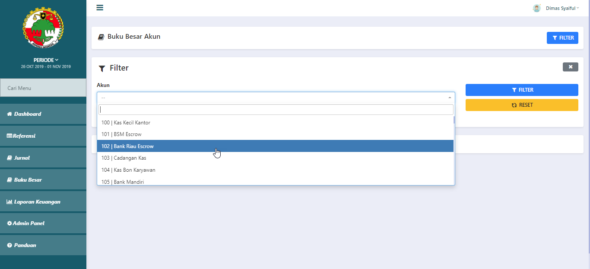
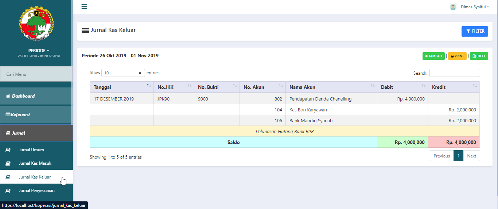

<div id="myCarousel" class="carousel slide" data-ride="carousel">
  <!-- Indicators -->
  
  <!-- Wrapper for slides -->
  <div class="carousel-inner">
    <div class="item active">
       
    </div>
	<div class="item">
	      

	    </div>
	<div class="item">
	      
	 </div>
   <div class="item">
        
   </div>
   <div class="item">
        
   </div> 

  </div>

  <!-- Left and right controls -->
  <a class="left carousel-control" href="#myCarousel" data-slide="prev">
    <span class="glyphicon glyphicon-chevron-left"></span>
    <span class="sr-only">Previous</span>
  </a>
  <a class="right carousel-control" href="#myCarousel" data-slide="next">
    <span class="glyphicon glyphicon-chevron-right"></span>
    <span class="sr-only">Next</span>
  </a>
</div>